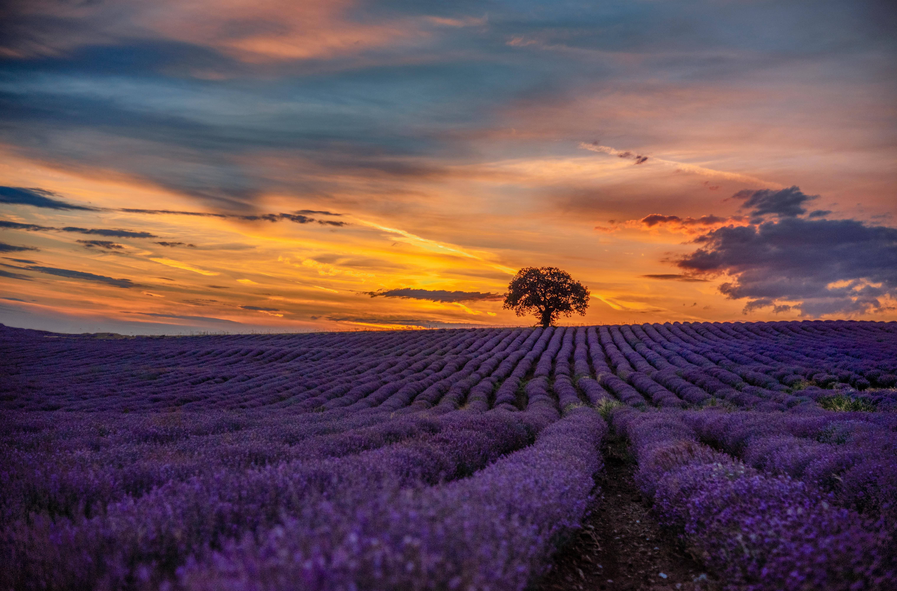

Une passion familiale au cœur des Alpes de Haute-Provence
Depuis plusieurs générations, notre famille de lavandiculteurs cultive avec passion la lavande dans les paysages préservés des Alpes de Haute-Provence. Héritiers d’un savoir-faire transmis de père en fils, nous travaillons la terre avec le cœur, en respectant les cycles naturels et en sublimant ce trésor provençal. Chaque brin de lavande raconte une histoire, celle de notre famille et de notre terroir.
Récoltée à la main, idéale pour compositions florales ou distillation artisanale. Disponible pour particuliers et professionnels.
En savoir plusSéchée naturellement au soleil, notre lavande conserve son parfum délicat et ses vertus apaisantes.
En savoir plusExtraites par distillation traditionnelle, elles révèlent toute la puissance aromatique et thérapeutique de la lavande.
DécouvrirÉlaborés avec soin, nos savons doux et parfumés prennent soin de votre peau au quotidien.
DécouvrirParfaits pour parfumer vos placards, chaussures ou linge, tout en éloignant les insectes naturellement.
Découvrir